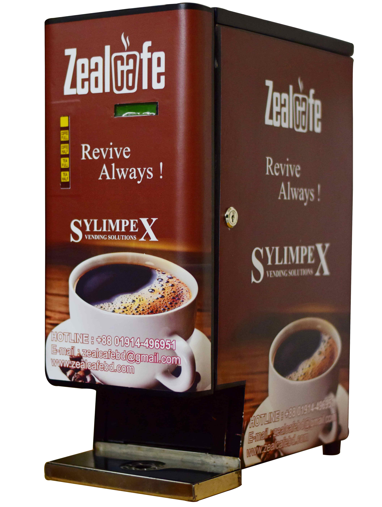

ZealCafe | Revive Always

Tea Coffee Vending Machines
Bid farewell to all the hassles you have to go through make that cup of coffee/tea. With just a simple, single press system, get yourself a hot/cold cup of coffee/tea ready in an instant. With our special mixtures there will be no need for you to add extra milk or sugar with the drink. Unlike when you do it manually, with our vending machine and special mixture, keep the taste consistent and always favorite. Our vending machine is not only limited to coffee/tea premix but also to a variety of premixes, including our own special mixes.
We have kept variety in our vending machine to fulfill your needs according to your desire and demand. We present you our vending machine with the following options:
Single Option: The simple vending machine for a single drink. We will provide you with the right set up for the just that one drink you want to have in this single option vending machine. The single button for the single drink will instantly get your coffee/tea or any other drink that you prefer.
Double Option: Got demand for not only tea but also for coffee? Or would like to also have any of our special mixes along with the tea premix? Double option vending machine is the one for you. We arrange the machine for you to instantly prepare the two drinks to your preference in an instance with a single press system. Each drink will have its own assigned button to press, so that you can use with easy and comfort.
Triple Option: If you have a lot of customers to serve, a triple option vending machine will make your life a lot easier. All three options can be of the same drink, or can also be of different mixtures that you demand of. Even with the enhancement of three options, the system will not get complicated for you. We ensure to keep the simple single press system for you, so that you can find the comfort and ease in using our system.
Be it single, double or triple, our vending machines, made with high grade materials is designed to meet your needs and provide you an easy to use machine, so that you can keep your customers happy, and we can keep you happy.
Spare Parts of Vending Machine
If there is part of vending machine you need for your company, we are here for you. We provide any needed parts of a vending machine. We assure you that the parts are made of high grade materials and are extremely durable and lasting. We are confident that you will be satisfied with our supplies and can compile the parts to make high quality and easy to use vending machines.
We provide you the following parts:
Vending Machine Canister: We provide you the canister made form high grade plastic. We ensure that the canister can withstand the required temperatures and environment. We assure you that it will be durable and reliable to use for your vending machine.
Ingredient Motor of Vending Machine (24 Volt DC): We provide 24 DC volt ingredient motor for your vending machine. It is made from high quality materials, ensuring its durability, strength and resistivity. It requires .9 amperes and has 90 RPM.
Vending Machine Dispense Valve: The dispense valves we provide are made from high grade plastics available in the market. We assure you of the quality of the dispense valves and confirm you that we have full confidence on the durability and lasting quality of the valves we provide.
Vending Machine Spare Parts: We also provide smaller spare parts of a vending machine, each made with high grade materials from the market. The parts are designed and made to suit perfectly for your vending machine. We strongly recommend the parts we provide, as we are confident that our provided parts are of high quality and is durable, strong and lasting. It will be just perfect for your vending machine.